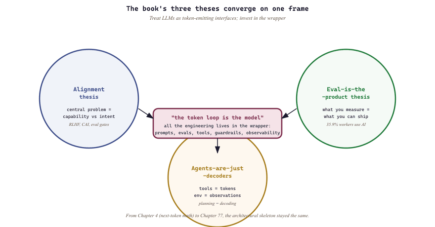

"By 2026 the AGI debate has shrunk into a smaller set of measurable LLM-capability disagreements. Smaller is not solved, but it is progress."
Sage, Year-End-Reckoner AI Agent
By 2026 the AGI debate has settled into a smaller set of measurable LLM and agent disagreements rather than the open-ended speculation of 2023. The arguments now run in terms of concrete LLM capabilities (multi-step agentic reasoning, long-context retrieval, tool-use reliability) and agent-product gating questions, not free-floating predictions. This section names what is settled, what remains genuinely open about frontier LLMs, and what to watch over the next twelve months as agent products mature.
Prerequisites
This section assumes the rest of Chapter 77 (sections 77.1 through 82.4) and the LLM-agent capability vocabulary from Section 26.1.
I started writing this book in early 2024. I am closing it in May 2026, and I want to use the last few pages to say what working in this field has felt like over those twenty-eight months, and what I hope the reader carries away. The chapters that precede this one are about techniques and systems. This one is about attitude.
The twenty-eight months covered the period where the curves visibly bent. Humanity's Last Exam appeared and started to fall faster than its designers expected. Anthropic's labor-market data told us that 35.9% of U.S. workers were using generative AI by December 2025, and the majority of that use was augmentation rather than displacement. The first credible generalist robot policy shipped. Voice agents stopped sounding robotic. Code agents started to look like genuine collaborators rather than autocomplete on stimulants. None of this was AGI. All of it was, very visibly, the precursor.
77.5.1 The working day in the AGI transition
The "eval is the product" thesis has appeared as a sticker on the laptops of several Anthropic, OpenAI, and Google DeepMind researchers since 2024. Eugene Yan's January 2024 blog post "Evals: Measuring LLM Quality" is widely credited with crystallizing the slogan; the post was written over a long weekend after Yan got frustrated at how rarely teams shipped eval suites alongside model launches.
The working day of an LLM engineer in 2026 looks different from the working day of an LLM engineer in 2023. In 2023 you spent your mornings prompt-engineering and your afternoons being surprised by hallucinations. In 2026 your morning starts with reading the night's eval results: a battery of automated graders has run your latest agent against thousands of held-out tasks while you slept. Your afternoon is spent looking at the 2 to 5% of cases where the grader and the model disagree. The graders are imperfect. The models are imperfect. The interesting work is in the disagreement.
The tooling that makes this possible is mundane in the way the rest of software engineering is mundane. You have a CI pipeline that runs an eval suite on every pull request. You have a queue of human raters who arbitrate the hard cases. You have a dashboard that tracks regressions by category. You have a budget alert when token spend on a single experiment exceeds $50. Almost none of this was possible to do well in 2023. By 2026, it is the unsexy infrastructure that determines whether a team ships or stalls.
I have spent thirteen parts of this book arguing that the bottleneck in LLM systems is not the model. The bottleneck is your ability to measure the model: to write an evaluator that captures what your users actually want, to run it cheaply on every change, to act on the result. Capability moves fast. The capability you can deploy with confidence moves at the speed of your evals. Teams that internalize this ship more in a quarter than teams that do not ship in a year. If you remember one thing from this book, it is this. Build the eval first. Build the eval well. The model question almost answers itself once the eval question is answered.
77.5.2 The practitioner attitude
I have come to think the right attitude for working in this field is a specific kind of duality. You should be skeptical: most claims about capability are downstream of either cherry-picked demos or unrepresentative benchmarks, and the gap between "the model can do X" and "the model reliably does X in production" is usually the gap that costs you six months. You should also be engaged: the rate of genuine progress is genuinely high, and the people who treat it as hype-cycle background noise miss real opportunities. Skepticism without engagement curdles into cynicism. Engagement without skepticism becomes credulity. The combination is what lets you build things that work.
The second part of the attitude is builder-first. The field has a recurring temptation to debate from first principles, to argue about scaling laws or emergent capabilities or alignment-in-the-abstract. These debates are sometimes useful and often not. The discipline that consistently produces insight is to build a thing, measure how it fails, and let the measurements shape the next attempt. Most of what I have learned about LLMs that I trust, I learned by shipping. The arguments I have read are useful only insofar as they were anchored to artifacts somebody actually ran.
The third part is evidence-driven about your own claims, especially the comfortable ones. It is uncomfortable to discover that your favorite technique only worked because of a subtle data leak, that your prompt template lost to a one-line baseline you never tried, that the agent loop you spent three months on does worse than a single LLM call with retrieval. It is much less uncomfortable to never run the comparison. Most of the field's accumulated practitioner knowledge comes from people who chose the discomfort over the lack of it.

77.5.3 The threads worth carrying forward
The book argued three theses across its parts, and I want to name them one final time. The alignment thesis: that the central technical problem of frontier LLMs is not capability but the gap between capability and intent, and that this gap is what every product-quality layer in the stack (RLHF, constitutional AI, deliberative alignment, evals, observability) exists to close. The eval-is-the-product thesis: that what you measure determines what you can ship, that measurement is hard, that measurement is creative work, and that the best engineering teams in this field are the ones who treat their eval suite as a first-class artifact. The agents-are-just-decoders thesis: that the apparent complexity of agent systems collapses into the same next-token loop you understood from a base LLM, with tools as extra tokens, environments as observations, and planning as multi-step decoding. These are not three independent ideas. They are three projections of one idea: the productive frame for thinking about LLMs is to treat them as token-emitting general-purpose interfaces, and to invest your effort in everything that wraps the token loop.
Twelve parts ago we started with the math of next-token prediction over a vocabulary. Sixty-four chapters later we are at autonomous robots that synthesize new materials, agents that plan multi-step transactions, and world models that train policies inside imagined rollouts. The connective tissue, however ornate the application has gotten, has mostly remained the same softmax over a learned distribution; some frontier systems (diffusion-LM heads, hybrid SSM-attention stacks, RL-trained reasoning loops) qualify that picture and may qualify it further. Most of the complexity is in the wrapper, not in the core. If you understood Chapter 4, you understand the architectural skeleton of most systems in this book, including most of the ones that ship next year.
77.5.4 What to remember when you put the book down
The honest summary of what I would tell a junior engineer entering the field in 2026 is short. Build something small that works end to end before you build anything ambitious. A toy retrieval-augmented chatbot you can deploy and observe will teach you more than a year of reading. Write the eval before you write the agent. If you cannot measure success, you cannot improve it. Read the model card. Most production incidents in this field are foreseeable from documentation the team did not read carefully. Have a fallback. Every production LLM system should be capable of falling back to a simpler, slower, or different-provider path when the primary fails. Take the safety arguments seriously, even when you find them annoying. The teams I know who do interesting work in 2026 all internalized that capability without alignment is a liability, and they invested accordingly.
I do not know what 2027 looks like. The evidence in this chapter says the curve is still bending, the data points on AGI timelines remain spread across years, and the labor-market story has not stabilized into either the optimistic or the pessimistic equilibrium. Some of the techniques I have spent chapters on will be obsolete by the time you reach this page. Some will be unchanged in five years. The skill that compounds is the skill of telling the difference, and the only way I know to learn it is to build, measure, and remain honest about what worked. Thank you for reading.
77.5.5 The open problems a seminar could take up
The epilogue above is a practitioner's reckoning, but the chapter would be incomplete if it left the reader with attitude alone. The "smaller set of measurable disagreements" from the section opener is not rhetorical: each disagreement reduces to a named technical question with a falsifiable answer. The following four are stated so that a graduate seminar could adopt any one of them as a term project, with a clear definition of what a resolving measurement would look like. None is settled as of mid-2026.
Each problem below states the question, why it remains unresolved, and the concrete measurement that would resolve it. They are ordered from the most empirically tractable to the most foundational.
- Where does test-time-compute scaling cross the train-time frontier? Reasoning models trade inference FLOPs for accuracy by sampling longer chains, but it is unknown whether this gain plateaus and at what compute ratio. It is unresolved because published inference-scaling curves (o-series, R1-style GRPO models) are reported on different benchmarks and rarely co-plotted against a matched train-time-compute baseline on the same task and seed. A resolving result: on one fixed task panel, one model family, and one seed, the inference-FLOP multiple at which marginal accuracy per additional inference FLOP first falls below the marginal accuracy per equivalent train-time FLOP, with confidence intervals that exclude the crossover being beyond the measured range.
- Can weak-to-strong certification hold under distribution shift? Weak-to-strong generalization shows a weaker supervisor can elicit stronger behavior, but a certificate is stronger: a weaker verifier issuing a guarantee about a stronger model's output that provably survives a shift in the input distribution. It is unresolved because existing weak-to-strong results report in-distribution recovery of performance, not a bound that is stated and then tested off-distribution. A resolving result: a verifier of capability level $w$ that emits a guarantee $g$ on a model of level $s > w$, where the empirical violation rate of $g$ stays below a pre-registered $\epsilon$ on a held-out distribution at a measured shift magnitude, not just on the training distribution.
- Do SAE-steered features survive the "carve the joints" critique? Sparse-autoencoder dictionaries let practitioners steer a model by amplifying a named feature, but it is contested whether those features are causally load-bearing units of computation or artifacts of the chosen dictionary width and sparsity penalty. It is unresolved because feature catalogs are typically reported for a single trained SAE, so stability across retraining is rarely measured. A resolving result: a steered feature whose causal effect on the target behavior is reproduced across independently seeded SAEs of differing widths, with a feature-matching overlap above a pre-registered threshold and an intervention effect size whose confidence interval excludes zero in every seed, distinguishing a real computational direction from a dictionary artifact.
- Can the scale of a named capability be predicted from sub-scale measurements? The emergent-abilities debate turns on whether a capability that appears abruptly at some scale could have been forecast from smaller models, or whether the apparent jump is an artifact of a discontinuous metric. It is unresolved because most "emergence" claims are retrospective: the curve is fit after the capability is observed, never used to predict it forward. A resolving result: a forecast, registered before training the larger model, of the parameter or compute scale at which a named capability crosses a fixed threshold on a smooth (non-thresholded) metric, where the realized crossing scale falls inside the pre-registered prediction interval for several distinct capabilities rather than one cherry-picked case.
This book argued three theses across its parts. The alignment thesis: that the central technical problem of frontier LLMs is the gap between capability and intent, and that the product-quality layer (RLHF, Constitutional AI, deliberative alignment, evals, observability) exists to close it. The eval-is-the-product thesis: that what you measure determines what you can ship, that measurement is hard and creative work, and that the best engineering teams in this field treat their eval suite as a first-class artifact. The agents-are-just-decoders thesis: that the apparent complexity of agent systems collapses into the same next-token loop you understood from a base LLM, with tools as extra tokens, environments as observations, and planning as multi-step decoding. These are three projections of one idea: treat LLMs as token-emitting general-purpose interfaces and invest your effort in everything that wraps the token loop.
What's Next?
In the next chapter, Chapter 78: Platforms, we continue building on the material from this chapter.